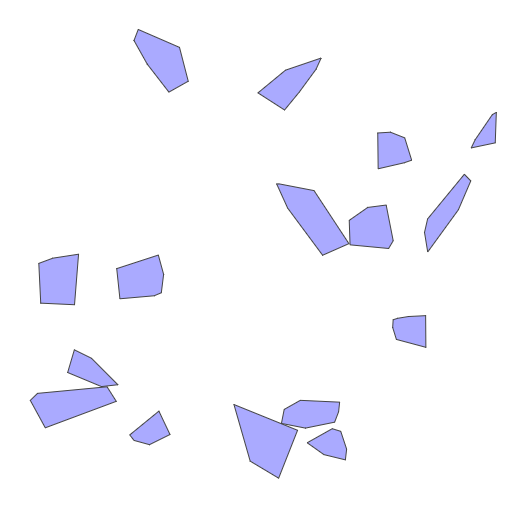

Collision Detection
SAT Collision
SAT (Separating Axis Theorem) に基づく衝突。
GJK Collision
GJK (Gilbert-Johnson-Keerthi) アルゴリズムに基づく衝突判定。
参考文献
SAT (Separating Axis Theorem) – dyn4j
GJK (Gilbert–Johnson–Keerthi) – dyn4j
Combining translation and rotation
Rigid Body Collisions Physics Simulation
language agnostic - Shortest distance between a point and a line segment - Stack Overflow
algorithm - Find overlap between collinear lines - Stack Overflow
